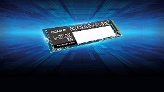
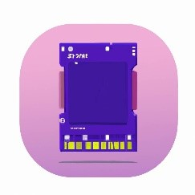
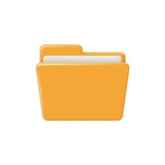
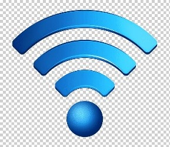

| Términos español/ ingles |
Español |
Ingles |
Imagenes |
| CPU
CPU |
Es el componente principal que procesa las señales y hace posible
la computación, obtiene instrucciones de la memoria, realiza las tareas
necesarias y envía la salida a la memoria. |
It is the main component that processes signals and makes computing possible, fetches
instructions from memory, performs necessary tasks and sends the output to memory. |

|
| Eniac
Eniac |
Es programable para realizar cualquier tipo de cálculo numérico
sumas, restas, multiplicaciones, divisiones y raíces cuadradas. |
Is programmable to perform any type of numerical calculation: addition, subtraction,
multiplication, division and square roots. |

|
| Fax
Fax |
Aplicación de fax en la nube segura y confiable para su dispositivo macOS y Windows. |
Secure and reliable cloud fax app for your macOS and Windows device. |
|
| Hardware
Hardware |
Es el conjunto de las partes físicas que integran el cuerpo de
un sistema computarizado: las placas, circuitos, mecanismos y
dispositivos eléctricos, así como de procesamiento, soporte y conexión |
Is the set of physical parts that make up the body of a computer system: the boards, circuits,
mechanisms and electrical devices, as well as processing, support and connection. |
|
| Headts
Headts |
Headts es un programa de los sistemas tipo Unix que muestra las primeras líneas de uno o más archivos de texto.
Head imprimirá por defecto a la salida estándar las primeras diez líneas de sus datos de entrada. |
Headts is a program on Unix-like systems that displays the first lines of one or more text files.
Head will by default print to stout the first ten lines of your e data. |
|
| Hubs de puertos |
Es un dispositivo que permite concentrar varios puertos USB, permitiendo la conexión con una máquina. |
Is a device that allows you to concentrate several USB ports, allowing you to connect with a machine. |

|
| Modem |
Por software es un periférico de ordenador que permite conectarlo a una línea telefónica, igual que un módem.
La diferencia está en que un módem por software no incorpora todo el hardware necesario para hacer este trabajo,
sino que usa la CPU y RAM del ordenador, y por tanto necesita un controlador software. |
Software is a computer peripheral that allows it to be connected to a telephone line, just like a modem.
The difference is that a software modem does not incorporate all the hardware necessary to do this job,
but rather uses the computer's CPU and RAM, and therefore needs a software driver. |

|
| periféricos |
Un periférico es un dispositivo que conecta un dispositivo externo con el ordenador. |
A peripheral is a device that connects an external device with the computer. |
|
| Petabytes |
Un petabyte (PB) es una de las unidades de medida de datos digitales más grandes
y equivale aproximadamente a 1024 terabytes. |
A petabyte is a digital data unit that is approximately 1024 terabytes. |

|
| tarjeta perforada |
La tarjeta perforada es un dispositivo que permite conectar un periférico con un ordenador. |
The perforated card is a device that allows you to connect a peripheral with a computer. |

|
| terabyte |
Un terabyte (TB) es una de las unidades de medida de datos digitales más grandes
y equivale aproximadamente a 1000 petabytes. |
A terabyte is a digital data unit that is approximately 1000 petabytes. |

|
| Zettabyte |
Un zettabyte (ZB) es una de las unidades de medida de datos digitales más grandes
y equivale aproximadamente a 1000 terabytes. |
A zettabyte is a digital data unit that is approximately 1000 terabytes. |

|
| yottabyte |
Un yottabyte es una unidad de almacenamiento de información cuyo símbolo es el YB y equivale a 10²⁴ bytes. |
A yottabyte is a storage device whose symbol is the YB and is equivalent to 10²⁴ bytes. |
|
| archivo |
Conjunto de ordenador de documentos que una persona, una sociedad o institución,
produce en el ejército de sus funciones o actividades. |
A file is a collection of computer documents that a person, a society or institution produces
in the context of their functions or activities. |

|
| Formulario |
En el contexto de la Web, un formulario es un conjunto de datos de entrada que un usuario puede rellenar. |
A form is a collection of input data that a user can fill out in the context of the Web. |
|
| programa |
Programa es una secuencia de instrucciones que se ejecutan en un ordenador. |
A program is a sequence of instructions that is executed on a computer. |
|
| Código QR |
Conjunto de archivos que contienen todas las líneas de código del programa, software o aplicación. |
A QR code is a collection of files that contains all the code lines of a program, software or application. |
|
| Bit |
Un bit es un elemento digital que representa un 0 o un 1. |
A bit is a digital element that represents a 0 or a 1. |

|
| Wifi |
Sistema de conexión inalámbrica, dentro de un área determinada, entre dispositivos
electrónicos, y frecuentemente para acceso a internet. |
Wireless connection system, within a certain area, between electronic devices, and frequently for Internet access. |

|
| Web |
Red Informática Mundial |
Global computer network. |

|